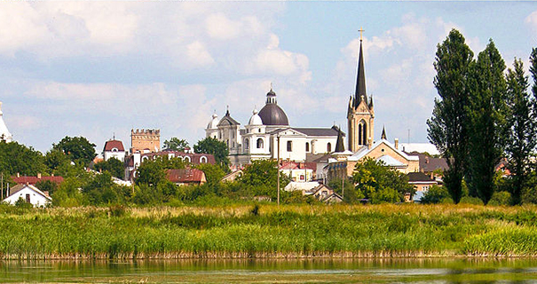

Lutzk
—учасн≥ мешканц≥ м≥ста Ћуцька лучани зберегли незм≥нною стародавню назву племен≥ Ђлучанї, що мешкало в околиц€х м≥ста Ћуцька та в Ћуцьку. ћ≥сто розташоване на перетин≥ торговельних шл€х≥в, що вели до крањн «аходу та Ѕалт≥њ, Ћуцьк поступово перетворивс€ на важливий економ≥чний центр; судноплавн≥ артер≥њ з'Їднували м≥сто з иЇвом, портами ”крањни та ≥нших чорноморських держав. ќднак розвиток стародавнього Ћуцька був би неможливий без виг≥дного оборонного розташуванн€ Ч з п≥вноч≥ та заходу меж≥ м≥ста визначалис€ вигином р≥ки —тир, на п≥вдн≥ прот≥кав √лушець, сх≥д оточили непрох≥дн≥ болота. «в≥дси ≥ назва м≥ста Ч Ћучеськ Ч в≥д слова Ђлукї, тобто Ђкол≥н, вигин р≥киї. ≤нша легенда пов'€зуЇ назву ЂЋучеськї з ≥м'€м вожд€ сх≥днослов'€нського племен≥ дул≥б≥в Ч Ћуки, €кий ≥ започаткував стародавнЇ м≥сто.
Давньоруський період
≤снують ≥нш≥ легенди про назву м≥ста. ¬перше згадка про Ћуцьк з'€вилас€ у ≤пат≥њвському л≥топису (датована 1085 роком), €кий вже тод≥ вказав на досить ≥стотний розвиток м≥ста. Ѕлизько 1000 року ¬олодимир I ¬еликий приЇднав ¬олинь до ињвськоњ –ус≥ ≥ збудував у Ћуцьку фортецю, що згодом перетворилась на ≥стотну перепону на шл€ху загарбник≥в. ÷€ фортец€ витримала облогу в≥йськ польського корол€ Ѕолеслава II —м≥ливого, јндр≥€ I Ѕоголюбського, галицьких кн€з≥в ¬олодимира ¬олодаревича та ярослава I ќсмомисла. ћ≥сто тривалий час було нездоланною перепоною на шл€ху татаро-монгольськоњ орди, однак у середин≥ XIII стол≥тт€ лучани були змушен≥ зруйнувати своњ оборонн≥ укр≥пленн€. ¬же у т≥ часи Ћуцьк в≥д≥гравав роль економ≥чного та адм≥н≥стративного центру ¬олинського кн€з≥вства, €ке у склад≥ √алицько-¬олинськоњ держави перегорнуло одну з найважлив≥ших стор≥нок украњнського державотворенн€.
1340 року Ћуцьк отримуЇ статус столиц≥ √алицько-¬олинського кн€з≥вства. ¬ цьому ж час≥ зводитьс€ резиденц≥€ кн€з€ Ћюбарта Ч Ћуцький замок. ÷е одна з небагатьох давн≥х споруд готичного стилю, €к≥ збереглис€ в ”крањн≥. «амок маЇ три веж≥: ¬'њзну, ¬ладичу ≥ —тирову. ¬середин≥ замку розташовувавс€ кафедральний собор ≤вана Ѕогослова Ч храм класичного в≥зант≥йського стилю. ” XV стол≥тт≥ в ньому висв€чували московських Їпископ≥в. « амвону церкви виголошував своњ палк≥ пропов≥д≥ ѕетро ћогила. –озкопки давнього храму в середин≥ 80-х рок≥в XX стол≥тт€ ви€вили за апсидою церкви похованн€ титулованих ос≥б, зокрема Ч кн€з€ ≤з€слава ≤нгваровича, син ≤нгвара ярославича, €кий загинув п≥д час битви на р≥чц≥ алка. ≤сторики припускають, що саме тут був похований ≥ ¬еликий кн€зь Ћюбарт.